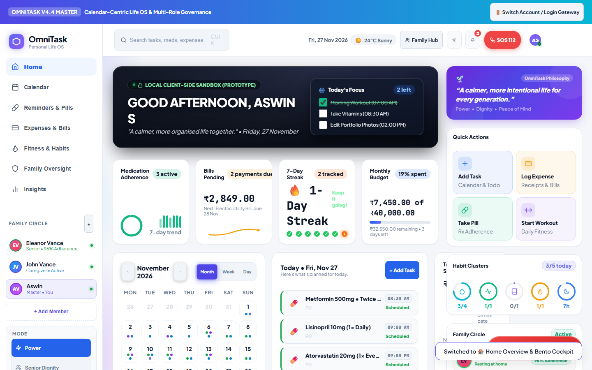
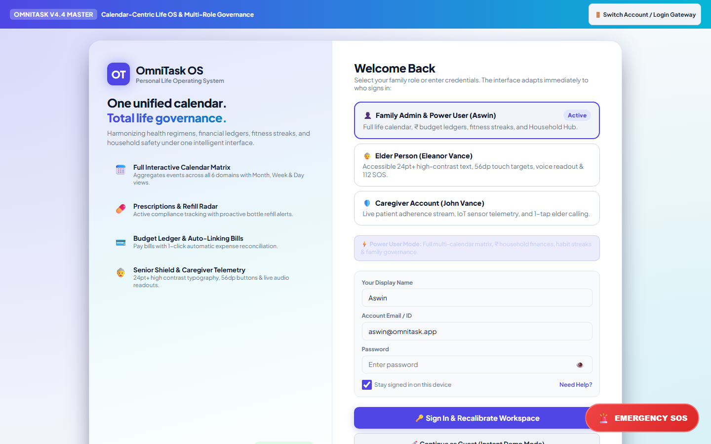
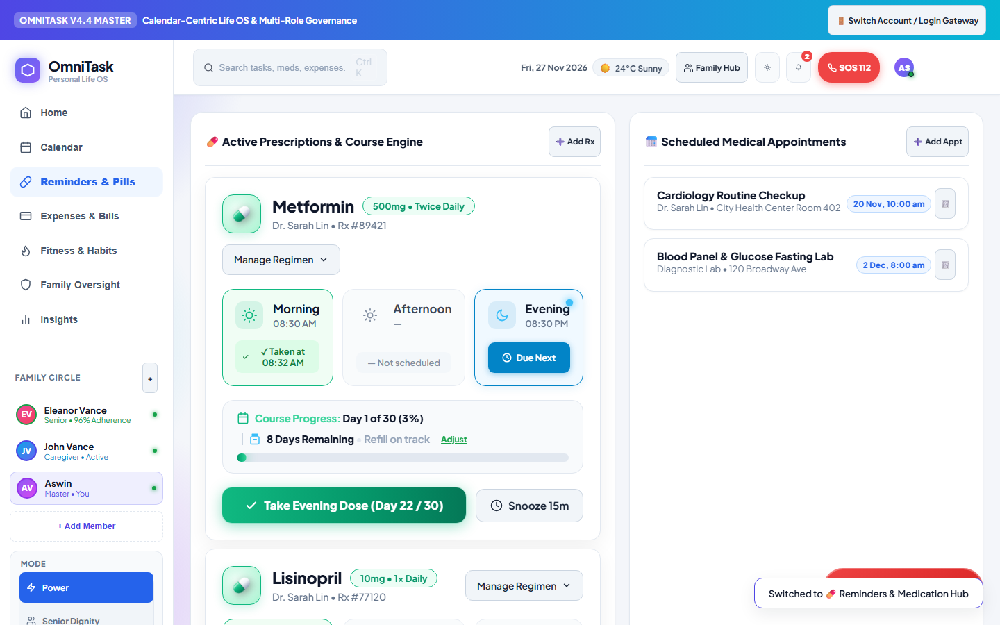
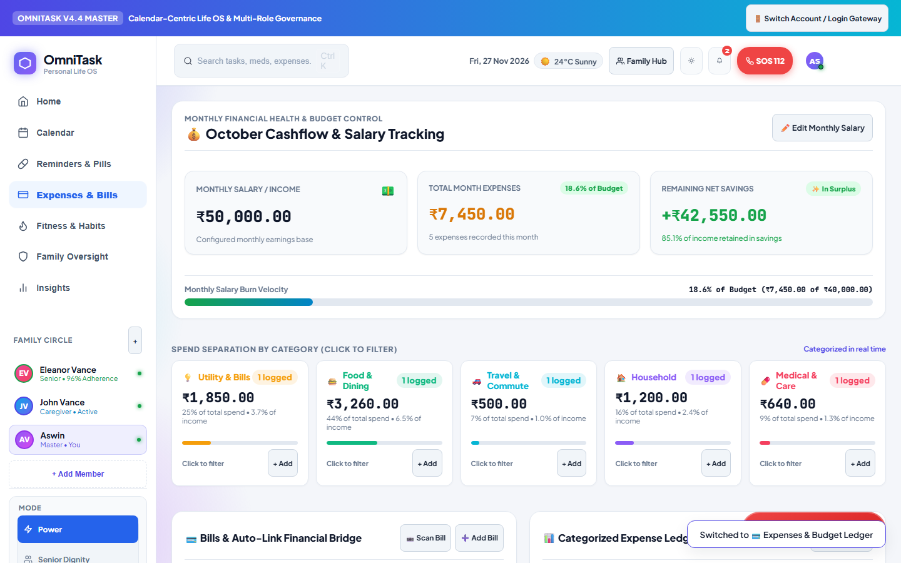
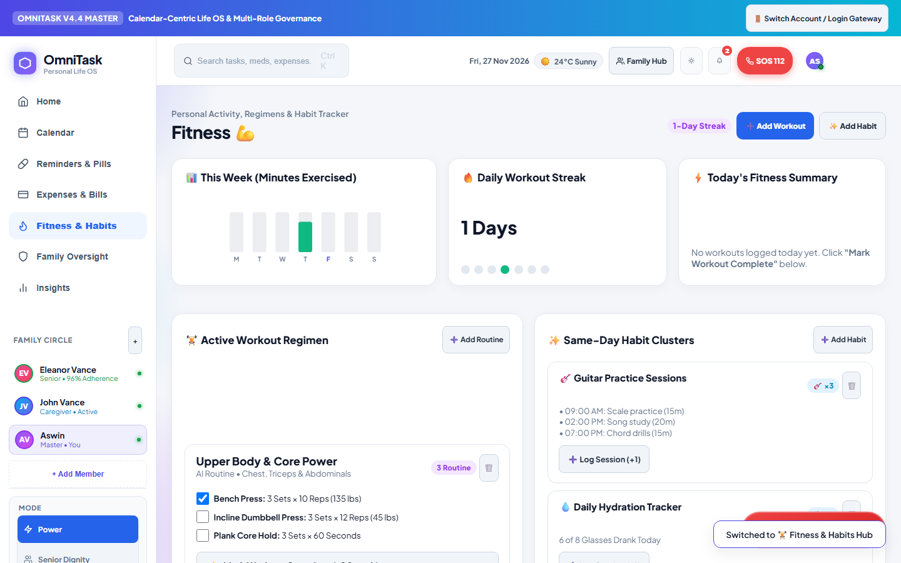
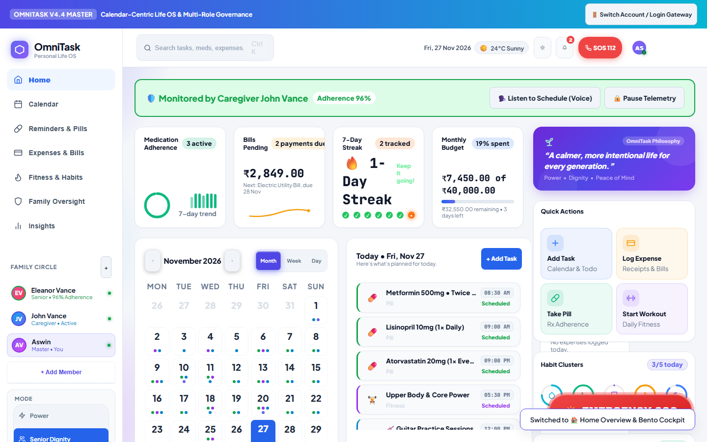
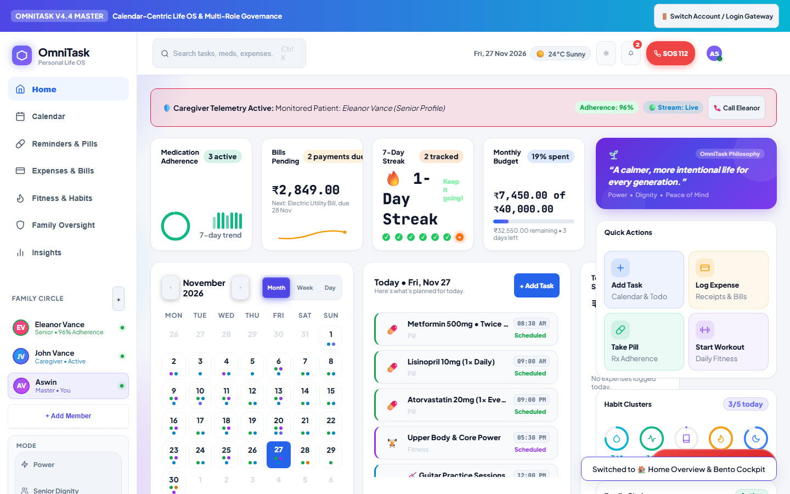
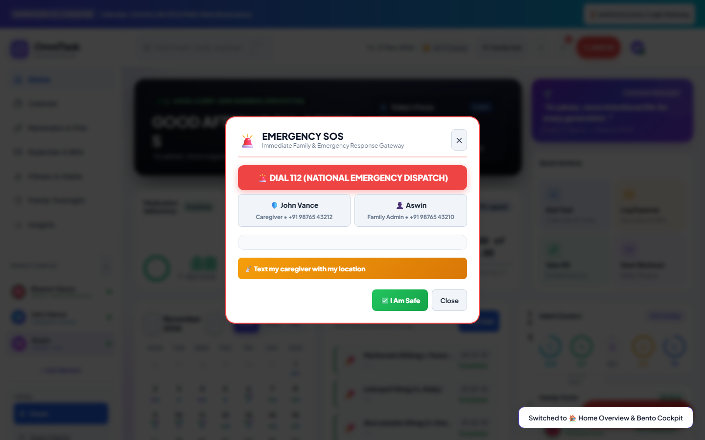

One unified calendar for the person who plans, the person who is looked after, and the person who looks after them. A calendar-centric Life Operating System reconciling clinical adherence, budget velocity, and multi-generational dignity.

OmniTask is a calendar-centric personal operating system. The home calendar is an intelligent aggregation and preview engine, never the siloed owner of data. It synthesizes inputs across four specialized domains: Reminders (prescriptions, payments, appointments), Financial Ledgers, Habits & Fitness, and Caregiver Telemetry.
Designed for the ambitious family administrator. Delivers ultra-high data throughput, multi-calendar synchronization, real-time salary burn tracking, and fast keyboard-first omni-search (Ctrl+K).
Transforms the app into an autonomous tablet appliance. Features 24pt+ high-contrast typography, massive 56dp touch targets, daylight audio readouts, and sovereign privacy pause controls.
Provides clinical guardians with high-signal, zero-noise adherence telemetry. Only escalates alerts when chronic medications are missed beyond a calibrated safety threshold.
Working adults in the "sandwich generation" manage their life through an exhausting maze of 5+ disconnected applications, leading to notification fatigue, dropped prescriptions, and surprise financial liabilities.
Google Calendar and Apple Calendar treat days as arbitrary blocks of time, completely detached from recurring medical regimens, emergency contacts, or workout routines.
Specialized reminder apps treat seniors with cold clinical austerity or intrusive camera surveillance, stripping elderly individuals of their independence and agency.
Walnut and Splitwise record expenses after the money has already left the account, failing to bridge upcoming utility bills on the calendar with real-time monthly salary burn.
Pre-design mixed-methods research conducted across three distinct user cohorts: young working professionals (n=20), independent seniors aged 68-84 (n=15), and professional/family caregivers (n=10).
Of young professionals report missing critical payments or workout sessions due to competing alert noise across 5+ disconnected apps.
Cohort A: Working Adults (22–38)Of elderly seniors make accidental mis-taps on buttons smaller than 48px, while 73% experience intense anxiety from non-emergency red badges.
Cohort B: Independent Seniors (68–84)Of surveyed seniors insisted on an explicit privacy pause switch, while 90% of caregivers demanded an unmasked Medical ID for crisis dispatch.
Cohort C: Caregivers & Nurses (32–55)Frequency of feature pairs grouped into the same operational mental bucket.
85% of participants consider both medication and recurring bills as "things I must remember on a specific calendar day." Decision: Pills, payments, and appointments live under one synchronized Reminders hub.
85% grouped paying a utility bill directly with daily expenses. Decision: Marking a scheduled bill "Paid" automatically creates an expense entry in the budget ledger, eliminating duplicate manual data entry.
OmniTask reconciles the conflicting psychological and ergonomic requirements of three household roles without forcing them into a one-size-fits-all compromise.
A dense, keyboard-driven cockpit to manage design sprints, workout PRs, and ensure his grandmother takes medication without intrusive calls.
Constant background anxiety about his mother; overwhelmed by switching between Splitwise, Google Calendar, and Medisafe.
MacBook Pro, high digital literacy, shortcut-oriented (Ctrl+K), multi-display workspace.
Live autonomously in her apartment, take heart pills on schedule, and maintain dignity without feeling infantilized or surveilled.
Tiny smartphone text, nested settings menus, and cameras installed by family that feel like a loss of privacy.
iPad on kitchen counter, mild arthritis tremor, macular degeneration requiring 24pt+ text.
Monitor patient adherence in real-time, receive high-signal alerts only when doses are missed, and print clinical reports for physicians.
False alarm fatigue, ambiguous liability when patients self-report, and time-consuming manual charts.
iPhone on hospital shifts, requires 1-tap dialer and zero-noise escalation protocols.
Designing across generations requires solving deep trade-offs between information density, accessibility, surveillance ethics, and emergency safety.
Conflict: Power users demand dense monthly matrices and keyboard accelerators. A fatigued senior with visual decline is paralyzed by dense visual noise.
Resolution: The underlying data remains synchronized, but the UI adapts completely via setMode(). Power mode displays the full bento cockpit, while Senior mode renders oversized cards, voice synthesis, and prominent 112 SOS buttons.
Conflict: Family monitoring easily degrades into a patronizing, one-way surveillance trap that elderly parents deeply resent.
Resolution: Transparent Two-Way Banner (*"Monitored by Caregiver John Vance • Adherence 96%"*) paired with a 1-tap *"Pause Telemetry"* switch. Eleanor retains complete sovereignty over her privacy, and zero intrusive video cameras are used.
Conflict: Apps frequently use red for busy days or routine tasks, causing seniors to ask anxiously: *"Did I do something wrong?"*
Resolution: A calm color ramp with dual-channel shape cues. Busy days use sage green and ocean blue. Crimson (#ef4444) is strictly reserved for life-critical Emergency 112 SOS dispatch and missed medication.
Conflict: Users hate marking a utility bill paid in one calendar app and then re-entering it as an expense in a separate budgeting spreadsheet.
Resolution: The Auto-Link Bridge. Clicking *"Paid ₹120.00"* on an upcoming electric bill instantly creates a categorized transaction in the expense ledger and recalculates monthly salary burn velocity in real-time.
A clinically engineered safety ladder where the three user roles intersect. It protects patient health while preventing premature alarm fatigue.
At the scheduled dose time (08:30 AM), Eleanor's tablet displays an active cyan dosage slot (*"Take Evening Dose"*) and plays a soft, dignified chime. Zero external notifications are sent to family, preserving her independence.
If unconfirmed past 15 minutes, the tablet invokes text-to-speech: "Eleanor, it's time for your morning Metformin dose." The card transitions to amber. Still zero alerts sent to John, allowing her time to finish tea or return from the garden.
When the safety threshold is exceeded, a push alert is dispatched to Caregiver John's iPhone. John can tap *"Call Eleanor"* directly from his command banner, contact her residence, and log a clinical note, instantly returning the system to nominal status.
Every screen captured directly from the live application, audited against contrast standards, with exhaustive inventories explaining what every control and button executes.
Establishes role-based access control, cryptographic WebCrypto SHA-256 client authentication, and unauthenticated emergency SOS bypass.

| Element / Button | Type | System Action & Logic | Visual State Change |
|---|---|---|---|
| Family Admin Card | Interactive Card | Sets login role to 'power'; pre-fills Aswin's credentials. | Highlights card with primary indigo border and blue glow. |
| Elder Person Card | Interactive Card | Sets role to 'senior'; pre-fills Eleanor's 4-digit PIN profile. | Highlights card in green; updates preview mode. |
| Caregiver Account Card | Interactive Card | Sets role to 'caregiver'; links telemetry stream to monitored patient. | Rose border highlight; activates clinical audit mode. |
| Password Eye Icon | Toggle Button | Switches input type between 'password' and 'text'. | Toggles icon from 👁️ to 🙈; reveals password safely. |
| Sign In & Recalibrate | Primary CTA | Hashes password with SHA-256; verifies session; calls toggleLoginScreen(false). | Unlocks workspace; renders personalized dashboard with toast. |
Treats chronic treatments as continuous 30-day clinical courses rather than disposable to-do alarms, tracking course progress, refill buffers, and emergency medical IDs.

| Element / Button | Type | System Action & Logic | Visual State Change |
|---|---|---|---|
| + Add Rx | Header CTA | Opens Prescription Course Creator modal with dosage, frequency, and doctor fields. | Fades in modal backdrop; focuses medication name input. |
| Take Evening Dose | Action Button | Logs dose timestamp; increments course counter (Day 22 of 30); increments streak. | Slot turns green; progress bar advances to 73%; logs audit entry. |
| Snooze 15m | Secondary Button | Delays next notification cycle by 15 minutes; postpones Caregiver Escalation timer. | Shows toast *"Snoozed 15m"*; updates badge to *"Snoozed"*. |
| Refill Radar Badge | Telemetry Chip | Computes remaining doses vs. 7-day safety threshold. | Displays *"8 Days Remaining • Refill on track"* in green. |
| Emergency Medical ID | Accordion Card | Expands emergency blood type (O+), penicillin allergy, and hospital details. | Card smoothly slides open for first responders without a password. |
Bridges scheduled calendar liabilities directly with liquid monthly salary burn, preventing unexpected cashflow depletion.

| Element / Button | Type | System Action & Logic | Visual State Change |
|---|---|---|---|
| Edit Monthly Salary | Header CTA | Prompts user to configure monthly take-home salary baseline (₹50,000). | Updates salary variable and recalculates burn velocity. |
| Paid (₹120.00) | Auto-Link Bridge | Marks utility bill as paid; creates linked expense item in ledger. | Button turns green; ledger adds *"Electric Bill (Auto-Linked)"*. |
| Category Filter Chips | Filter Buttons | Filters ledger table by category (Utility, Food, Travel, Medical). | Selected card receives blue border; updates ledger list below. |
| Export CSV | Data Button | Serializes expense ledger into RFC 4180 CSV with formula injection defense. | Downloads omnitask_expenses_october_2026.csv to device. |
Unifies physical strength regimens with same-day clustered habit tracking (hydration, guitar drills) with clean sanitized multi-line schedule breakdowns.

| Element / Button | Type | System Action & Logic | Visual State Change |
|---|---|---|---|
| + Add Workout | Header CTA | Opens Workout Routine Builder (Exercise Name, Sets, Reps, Muscle Group). | Fades in workout dialog with focused exercise input. |
| Exercise Checkbox | Checklist Item | Toggles completion of specific workout set (e.g. Bench Press: 3 Sets × 10 Reps). | Strike-through on exercise text; updates routine count. |
| Mark Workout Complete | Streak Button | Records workout completion; increments 7-day streak; logs calendar entry. | Button pulses green; triggers toast *"Workout Complete! +1 Streak"*. |
| + Log Session (+1) | Habit Action | Increments daily session count for habit (e.g. Guitar Practice: 3 → 4). | Updates badge counter; renders clean multi-line schedule breakdown. |
Comparing how the same underlying medical adherence stream renders through the lens of independent elder dignity versus clinical oversight.

Features high-contrast 24pt+ typography, 56dp buttons, a friendly transparency banner (*"Monitored by John Vance"*), spoken schedule synthesis, and a 1-tap *"Pause Telemetry"* button.

Features live adherence sparklines (96%), real-time activity stream, paired IoT tablet battery levels, escalation sliders, and a 1-tap direct phone dialer to Eleanor's tablet.
The fail-safe crisis gateway providing instant 112 dialing, caregiver SMS with live GPS coordinates, and first-responder Medical ID details.

| Element / Button | Type | System Action & Logic | Visual State Change |
|---|---|---|---|
| DIAL 112 (DISPATCH) | Emergency CTA | Executes native telephone dialer protocol (tel:112 / tel:911). | Button pulses red; launches native phone dialer immediately. |
| Call John Vance | Contact Card | Dials primary caregiver directly (tel:+919876543212); sends priority alert. | Launches call; records emergency check-in log. |
| Text Caregiver with Location | SMS GPS Button | Queries Geolocation API; formats SMS with Google Maps link. | Opens device SMS composer pre-filled with live coordinates. |
| I Am Safe | Resolution Button | Cancels emergency state; logs safety confirmation to family stream. | Closes modal; sends reassuring toast to family members. |
Documenting the rigorous auditing and code remediation process that eliminated all visual flaws from the initial trial build.
Every color token serves an unambiguous functional role. Red is strictly reserved for life-critical medical emergencies.
Clean geometric grotesque sans-serif engineered for digital interfaces. Display headings at 32/40 800-weight, body text at 14/20 500-weight.
Calibrated specifically for seniors with macular degeneration and motor tremors: